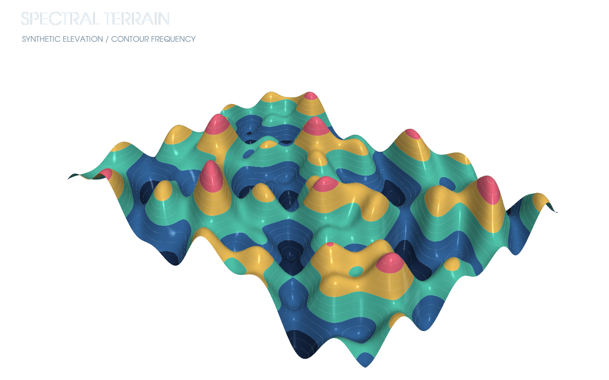

01 · 3D surface
Spectral terrain
How do multi-frequency components shape a surface?
src/pyvista_demos/render.py
def spectral_terrain() -> pv.Plotter:
plotter = new_plotter("SPECTRAL TERRAIN", "SYNTHETIC ELEVATION / CONTOUR FREQUENCY")
x = np.linspace(-5.5, 5.5, 180)
y = np.linspace(-4.1, 4.1, 150)
xx, yy = np.meshgrid(x, y, indexing="ij")
zz = 0.7 * np.sin(xx * 1.2) * np.cos(yy * 1.45) + 0.28 * np.sin((xx + yy) * 3.1)
zz += 0.18 * np.cos(np.sqrt(xx**2 + yy**2) * 5.0)
grid = pv.StructuredGrid(xx, yy, zz)
grid["elevation"] = zz.ravel(order="F")
plotter.add_mesh(
grid,
scalars="elevation",
cmap=["#172d54", "#346cb3", "#54d6c6", "#ffd166", "#ff6f91"],
smooth_shading=True,
specular=0.45,
metallic=0.18,
show_scalar_bar=False,
)
contours = grid.contour(isosurfaces=16, scalars="elevation")
plotter.add_mesh(contours, color="#d8f7ff", line_width=1.2, opacity=0.24)
plotter.camera_position = [(11.8, -12.5, 9.5), (0, 0, 0), (0, 0, 1)]
return plotter